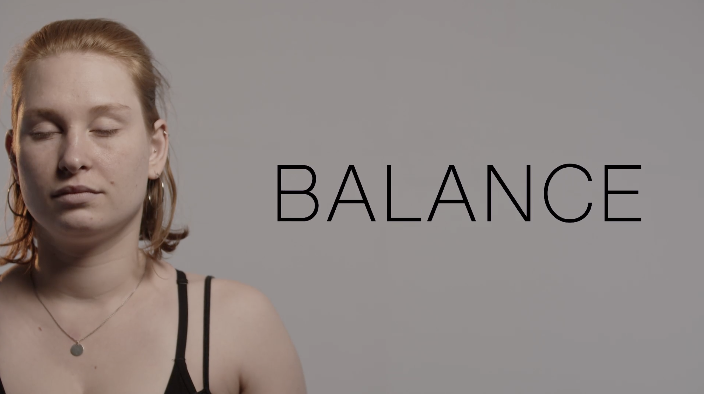
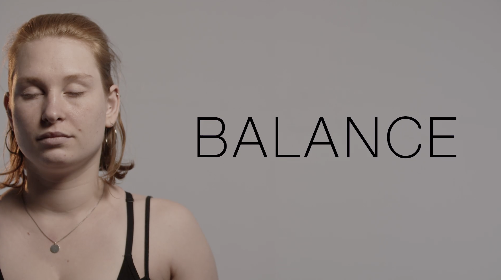

Improved. Absurd. Sponteanous. Study Projects.
Balance
Goldener Faden
Einsbein: The idea started with wanting to write a script that is so absurd that it's a lot of fun to shoot.
Tablaeu Vivant: This Project is a part of the Bach Concert "Bach sehen" in Bielefeld, bei Sigurd Müller. We created the Tablaeu Vivant to one of his musical cello pieces. The Concert is created to make his music, visuall with different types of Animation, and Resolume Sets. I created the Tableau Vivant in a small group and created a Audio Visuall Cello in TD soon to be featuered in Portfolio.
 
